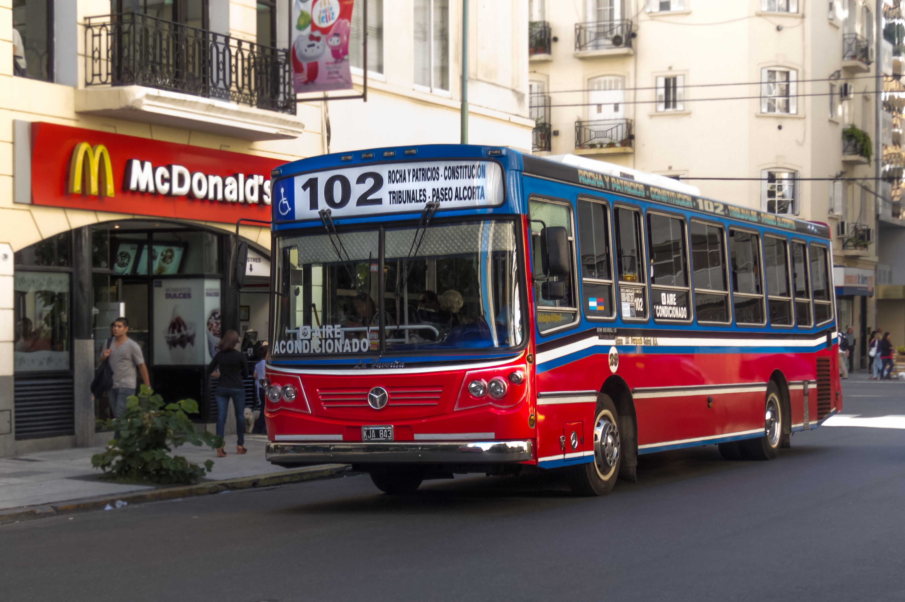
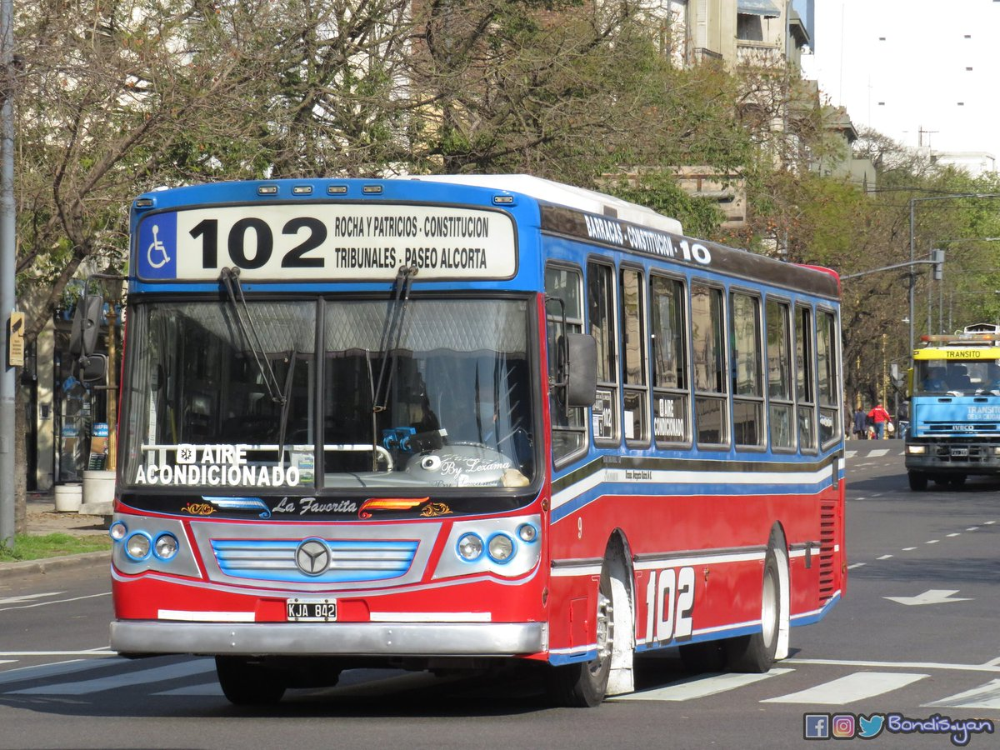
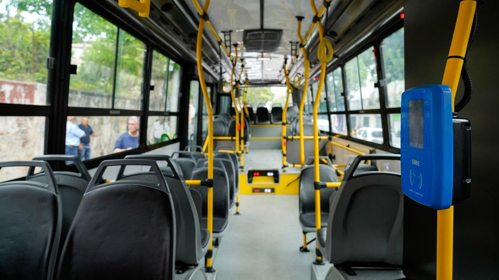
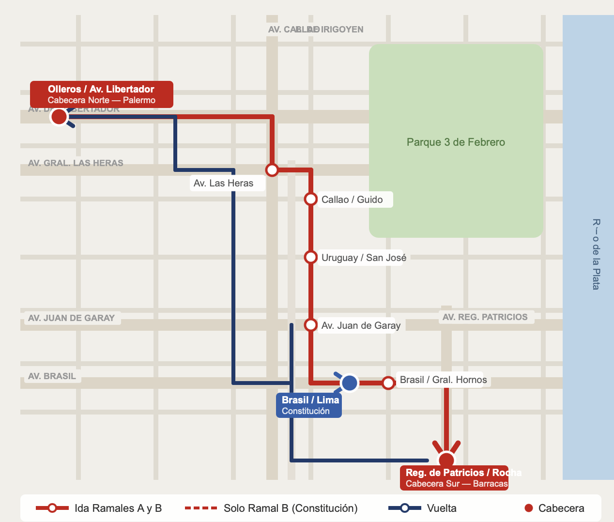

Línea de Colectivo · CABA
Palermo - Barracas / Constitución
Transportes Sargento Cabral S.C. · Servicio las 24 hs
Destinos principales
Empresa: Transportes Sargento Cabral S.C.
Servicio urbano de pasajeros que conecta el norte de la Ciudad de Buenos Aires (Palermo) con los barrios del sur: Barracas y Constitución, recorriendo avenidas principales como Las Heras, Callao y Juan de Garay.
- Ramal A: Est. Lisandro de la Torre - Barracas
- Ramal B: Est. Lisandro de la Torre - Constitución
Fotos de la línea



Paradas principales
Recorrido de ida — Ramal A (hacia Barracas)
-
Av. Olleros y Av. del Libertador
Cabecera norte — Palermo -
Av. General Las Heras
Recoleta — hospitales y facultades -
Av. Callao y Guido
Recoleta / Barrio Norte -
Uruguay y San José
Centro — zona comercial -
Av. Juan de Garay y Lima
San Cristóbal -
Av. Brasil y General Hornos
Barracas -
Av. Regimiento de Patricios y Rocha
Cabecera sur — Barracas
Mapa del recorrido
Recorrido oficial de la Línea 102 según el Gobierno de la Ciudad.

Recorrido completo de la línea
Cabecera Norte
Av. Olleros y Av. del Libertador, PalermoCabecera Sur — Ramal A
Av. Regimiento de Patricios y Rocha, BarracasCabecera Sur — Ramal B
Av. Brasil y Lima Este, ConstituciónHorarios y frecuencias
El servicio opera las 24 horas. La frecuencia varía según el horario.
| Ramal | Franja horaria | Frecuencia |
|---|---|---|
| Ramal A — Barracas | Hora pico (7–9 hs / 17–20 hs) | 6 minutos |
| Resto del día | 8,5 minutos | |
| Ramal B — Constitución | Hora pico (7–9 hs / 17–20 hs) | 12 minutos |
| Resto del día | 17,5 minutos |